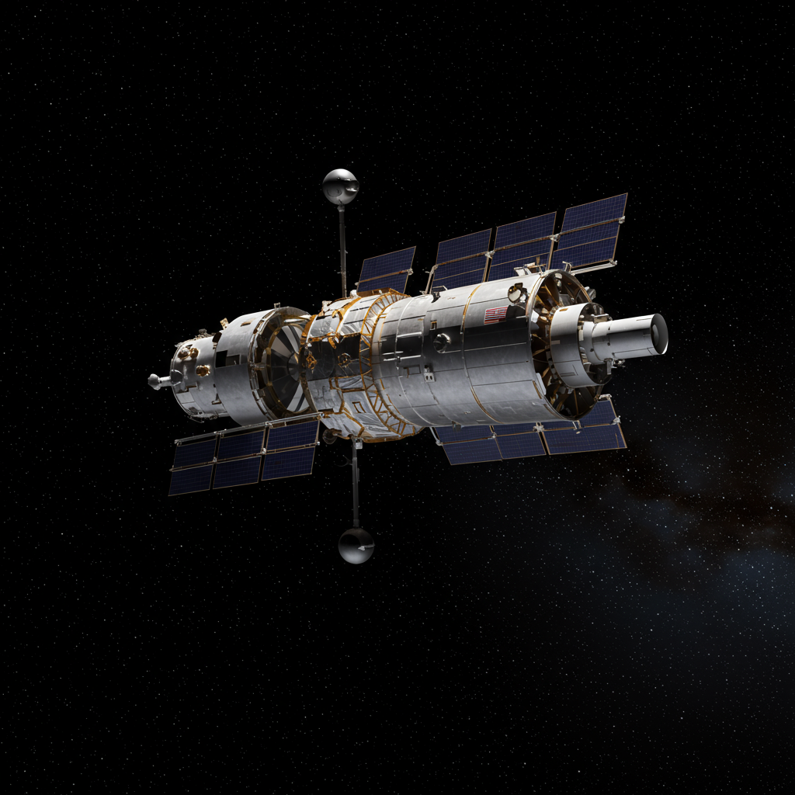

Hubble Space Telescope
Agencia: NASA / ESA
Fecha de lanzamiento: 24 de abril de 1990
Duración de misión: Operativo (más de 30 años en servicio)
Tipo de misión: Telescopio espacial en órbita baja terrestre
Objetivo: Observación astronómica en espectro ultravioleta, visible e infrarrojo cercano
Carga científica: Espejo de 2.4 m, cámaras de alta resolución, espectrógrafos, sensores de guía fina
Impacto histórico
El Telescopio Espacial Hubble ha transformado la astronomía desde su lanzamiento en 1990. Fue diseñado para evitar las distorsiones atmosféricas de la Tierra y obtener imágenes de altísima resolución del cosmos. Ha proporcionado datos esenciales sobre la expansión del universo, galaxias lejanas, nebulosas, cúmulos estelares y exoplanetas. Gracias a sus misiones de servicio, se ha mantenido actualizado durante décadas, convirtiéndose en un ícono de la exploración científica.